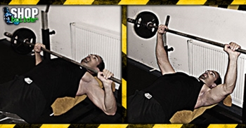

Ugrás a tartalomra
Ugrás a tartalomra
Testépítés
Fekvenyomás egyenes padon
{kind=link}
Hatás
A fekvenyomás egyenes padon igénybe veszi a mellkasi izmokat, a deltaizmokat és a tricepszet. A legtöbb testépítőbajnok a fekve nyomást tekinti a felsőtestgyakorlatok egyik legjobbjának.
Kiinduló helyzet
Feküdj háton egy vízszintes gyakorlópadra, kb. vállszélességű fogástávolságban, tenyérrel felfelé fogd meg a kétkezes súlyzó rúdját. Karod legyen egyenes és a súlyzót pontosan mellkasod felett tartsd.
A mozgás
Biztosítva, hogy felkar a törzstől oldalirányban kifelé mozogjon, lassan hajlítsd be karodat és ereszd lefelé a rudat, míg az meg nem érinti a mellkasod közepét, a mellbimbók vonalában. Nyomd vissza a kiinduló helyzetbe, és ismételd a mozgást az edzéstervedben meghatározott ismétlésszám szerint.
Edzéstipp
Ne homoríts a hátaddal, ne tartsd vissza lélegzetedet. Ez a munkában lévő izomnak ugyan könnyebbség, de veszélyes is lehet akár. Kinyomáskor kilégzést, leeresztéskor belégzést végezz. A fekvenyomás fejlesztése erőszint tekintetében különösen nagy figyelmet igényel, ezért mindig ügyeljünk a szabályos kivitelezésre, és a súlyok helyes megválasztására.